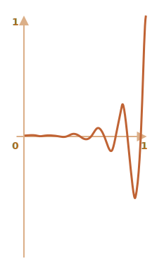

JavaScript 动画可以处理 CSS 无法处理的事情。
例如，沿着具有与 Bezier 曲线不同的时序函数的复杂路径移动，或者实现画布上的动画。
使用 setInterval
从 HTML/CSS 的角度来看，动画是 style 属性的逐渐变化。例如，将 style.left 从 0px 变化到 100px 可以移动元素。
如果我们用 setInterval 每秒做 50 次小变化，看起来会更流畅。电影也是这样的原理：每秒 24 帧或更多帧足以使其看起来流畅。
伪代码如下：
let delay = 1000 / 50; // 每秒 50 帧
let timer = setInterval(function() {
if (animation complete) clearInterval(timer);
else increase style.left
}, delay)更完整的动画示例：
let start = Date.now(); // 保存开始时间
let timer = setInterval(function() {
// 距开始过了多长时间
let timePassed = Date.now() - start;
if (timePassed >= 2000) {
clearInterval(timer); // 2 秒后结束动画
return;
}
// 在 timePassed 时刻绘制动画
draw(timePassed);
}, 20);
// 随着 timePassed 从 0 增加到 2000
// 将 left 的值从 0px 增加到 400px
function draw(timePassed) {
train.style.left = timePassed / 5 + 'px';
}点击演示：
<!DOCTYPE HTML>
<html>
<head>
<style>
#train {
position: relative;
cursor: pointer;
}
</style>
</head>
<body>
<img id="train" src="https://js.cx/clipart/train.gif">
<script>
train.onclick = function() {
let start = Date.now();
let timer = setInterval(function() {
let timePassed = Date.now() - start;
train.style.left = timePassed / 5 + 'px';
if (timePassed > 2000) clearInterval(timer);
}, 20);
}
</script>
</body>
</html>使用 requestAnimationFrame
假设我们有几个同时运行的动画。
如果我们单独运行它们，每个都有自己的 setInterval(..., 20)，那么浏览器必须以比 20ms 更频繁的速度重绘。
每个 setInterval 每 20ms 触发一次，但它们相互独立，因此 20ms 内将有多个独立运行的重绘。
这几个独立的重绘应该组合在一起，以使浏览器更加容易处理。
换句话说，像下面这样：
setInterval(function() {
animate1();
animate2();
animate3();
}, 20)……比这样更好：
setInterval(animate1, 20);
setInterval(animate2, 20);
setInterval(animate3, 20);还有一件事需要记住。有时当 CPU 过载时，或者有其他原因需要降低重绘频率。例如，如果浏览器选项卡被隐藏，那么绘图完全没有意义。
有一个标准动画时序提供了 requestAnimationFrame 函数。
它解决了所有这些问题，甚至更多其它的问题。
语法：
let requestId = requestAnimationFrame(callback);这会让 callback 函数在浏览器每次重绘的最近时间运行。
如果我们对 callback 中的元素进行变化，这些变化将与其他 requestAnimationFrame 回调和 CSS 动画组合在一起。因此，只会有一次几何重新计算和重绘，而不是多次。
返回值 requestId 可用来取消回调：
// 取消回调的周期执行
cancelAnimationFrame(requestId);callback 得到一个参数 —— 从页面加载开始经过的毫秒数。这个时间也可通过调用 performance.now() 得到。
通常 callback 很快就会运行，除非 CPU 过载或笔记本电量消耗殆尽，或者其他原因。
下面的代码显示了 requestAnimationFrame 的前 10 次运行之间的时间间隔。通常是 10-20ms：
<script>
let prev = performance.now();
let times = 0;
requestAnimationFrame(function measure(time) {
document.body.insertAdjacentHTML("beforeEnd", Math.floor(time - prev) + " ");
prev = time;
if (times++ < 10) requestAnimationFrame(measure);
});
</script>结构化动画
现在我们可以在 requestAnimationFrame 基础上创建一个更通用的动画函数：
function animate({timing, draw, duration}) {
let start = performance.now();
requestAnimationFrame(function animate(time) {
// timeFraction 从 0 增加到 1
let timeFraction = (time - start) / duration;
if (timeFraction > 1) timeFraction = 1;
// 计算当前动画状态
let progress = timing(timeFraction);
draw(progress); // 绘制
if (timeFraction < 1) {
requestAnimationFrame(animate);
}
});
}animate 函数接受 3 个描述动画的基本参数：
duration-
动画总时间，比如
1000。 timing(timeFraction)-
时序函数，类似 CSS 属性
transition-timing-function，传入一个已过去的时间与总时间之比的小数（0代表开始，1代表结束），返回动画完成度（类似 Bezier 曲线中的y）。例如，线性函数意味着动画以相同的速度均匀地进行：
function linear(timeFraction) { return timeFraction; }图像如下：
它类似于
transition-timing-function: linear。后文有更多有趣的变体。 draw(progress)-
获取动画完成状态并绘制的函数。值
progress = 0表示开始动画状态，progress = 1表示结束状态。这是实际绘制动画的函数。
它可以移动元素：
function draw(progress) { train.style.left = progress + 'px'; }……或者做任何其他事情，我们可以以任何方式为任何事物制作动画。
让我们使用我们的函数将元素的 width 从 0 变化为 100%。
点击演示元素：
function animate({duration, draw, timing}) {
let start = performance.now();
requestAnimationFrame(function animate(time) {
let timeFraction = (time - start) / duration;
if (timeFraction > 1) timeFraction = 1;
let progress = timing(timeFraction)
draw(progress);
if (timeFraction < 1) {
requestAnimationFrame(animate);
}
});
}<!DOCTYPE HTML>
<html>
<head>
<meta charset="utf-8">
<style>
progress {
width: 5%;
}
</style>
<script src="animate.js"></script>
</head>
<body>
<progress id="elem"></progress>
<script>
elem.onclick = function() {
animate({
duration: 1000,
timing: function(timeFraction) {
return timeFraction;
},
draw: function(progress) {
elem.style.width = progress * 100 + '%';
}
});
};
</script>
</body>
</html>它的代码如下：
animate({
duration: 1000,
timing(timeFraction) {
return timeFraction;
},
draw(progress) {
elem.style.width = progress * 100 + '%';
}
});与 CSS 动画不同，我们可以在这里设计任何时序函数和任何绘图函数。时序函数不受 Bezier 曲线的限制。并且 draw 不局限于操作 CSS 属性，还可以为类似烟花动画或其他动画创建新元素。
时序函数
上文我们看到了最简单的线性时序函数。
让我们看看更多。我们将尝试使用不同时序函数的移动动画来查看它们的工作原理。
n 次幂
如果我们想加速动画，我们可以让 progress 为 n 次幂。
例如，抛物线：
function quad(timeFraction) {
return Math.pow(timeFraction, 2)
}图像如下：
看看实际效果（点击激活）：
……或者三次曲线甚至使用更大的 n。增大幂会让动画加速得更快。
下面是 progress 为 5 次幂的图像:
实际效果：
圆弧
函数：
function circ(timeFraction) {
return 1 - Math.sin(Math.acos(timeFraction));
}图像：
反弹：弓箭射击
此函数执行“弓箭射击”。首先，我们“拉弓弦”，然后“射击”。
与以前的函数不同，它取决于附加参数 x，即“弹性系数”。“拉弓弦”的距离由它定义。
代码如下：
function back(x, timeFraction) {
return Math.pow(timeFraction, 2) * ((x + 1) * timeFraction - x);
}x = 1.5 时的图像：
在动画中我们使用特定的 x 值。下面是 x = 1.5 时的例子：
弹跳
想象一下，我们正在抛球。球落下之后，弹跳几次然后停下来。
bounce 函数也是如此，但顺序相反：“bouncing”立即启动。它使用了几个特殊的系数：
function bounce(timeFraction) {
for (let a = 0, b = 1, result; 1; a += b, b /= 2) {
if (timeFraction >= (7 - 4 * a) / 11) {
return -Math.pow((11 - 6 * a - 11 * timeFraction) / 4, 2) + Math.pow(b, 2)
}
}
}演示：
伸缩动画
另一个“伸缩”函数接受附加参数 x 作为“初始范围”。
function elastic(x, timeFraction) {
return Math.pow(2, 10 * (timeFraction - 1)) * Math.cos(20 * Math.PI * x / 3 * timeFraction)
}x=1.5 时的图像：

x=1.5 时的演示
逆转：ease*
我们有一组时序函数。它们的直接应用称为“easeIn”。
有时我们需要以相反的顺序显示动画。这是通过“easeOut”变换完成的。
easeOut
在“easeOut”模式中，我们将 timing 函数封装到 timingEaseOut中：
timingEaseOut(timeFraction) = 1 - timing(1 - timeFraction);换句话说，我们有一个“变换”函数 makeEaseOut，它接受一个“常规”时序函数 timing 并返回一个封装器，里面封装了 timing 函数：
// 接受时序函数，返回变换后的变体
function makeEaseOut(timing) {
return function(timeFraction) {
return 1 - timing(1 - timeFraction);
}
}例如，我们可以使用上面描述的 bounce 函数：
let bounceEaseOut = makeEaseOut(bounce);这样，弹跳不会在动画开始时执行，而是在动画结束时。这样看起来更好：
#brick {
width: 40px;
height: 20px;
background: #EE6B47;
position: relative;
cursor: pointer;
}
#path {
outline: 1px solid #E8C48E;
width: 540px;
height: 20px;
}<!DOCTYPE HTML>
<html>
<head>
<meta charset="utf-8">
<link rel="stylesheet" href="style.css">
<script src="https://js.cx/libs/animate.js"></script>
</head>
<body>
<div id="path">
<div id="brick"></div>
</div>
<script>
function makeEaseOut(timing) {
return function(timeFraction) {
return 1 - timing(1 - timeFraction);
}
}
function bounce(timeFraction) {
for (let a = 0, b = 1, result; 1; a += b, b /= 2) {
if (timeFraction >= (7 - 4 * a) / 11) {
return -Math.pow((11 - 6 * a - 11 * timeFraction) / 4, 2) + Math.pow(b, 2)
}
}
}
let bounceEaseOut = makeEaseOut(bounce);
brick.onclick = function() {
animate({
duration: 3000,
timing: bounceEaseOut,
draw: function(progress) {
brick.style.left = progress * 500 + 'px';
}
});
};
</script>
</body>
</html>在这里，我们可以看到变换如何改变函数的行为：
如果在开始时有动画效果，比如弹跳 —— 那么它将在最后显示。
上图中常规弹跳为红色，easeOut 弹跳为蓝色。
- 常规弹跳 —— 物体在底部弹跳，然后突然跳到顶部。
easeOut变换之后 —— 物体跳到顶部之后，在那里弹跳。
easeInOut
我们还可以在动画的开头和结尾都显示效果。该变换称为“easeInOut”。
给定时序函数，我们按下面的方式计算动画状态：
if (timeFraction <= 0.5) { // 动画前半部分
return timing(2 * timeFraction) / 2;
} else { // 动画后半部分
return (2 - timing(2 * (1 - timeFraction))) / 2;
}封装器代码：
function makeEaseInOut(timing) {
return function(timeFraction) {
if (timeFraction < .5)
return timing(2 * timeFraction) / 2;
else
return (2 - timing(2 * (1 - timeFraction))) / 2;
}
}
bounceEaseInOut = makeEaseInOut(bounce);bounceEaseInOut 演示如下:
#brick {
width: 40px;
height: 20px;
background: #EE6B47;
position: relative;
cursor: pointer;
}
#path {
outline: 1px solid #E8C48E;
width: 540px;
height: 20px;
}<!DOCTYPE HTML>
<html>
<head>
<meta charset="utf-8">
<link rel="stylesheet" href="style.css">
<script src="https://js.cx/libs/animate.js"></script>
</head>
<body>
<div id="path">
<div id="brick"></div>
</div>
<script>
function makeEaseInOut(timing) {
return function(timeFraction) {
if (timeFraction < .5)
return timing(2 * timeFraction) / 2;
else
return (2 - timing(2 * (1 - timeFraction))) / 2;
}
}
function bounce(timeFraction) {
for (let a = 0, b = 1, result; 1; a += b, b /= 2) {
if (timeFraction >= (7 - 4 * a) / 11) {
return -Math.pow((11 - 6 * a - 11 * timeFraction) / 4, 2) + Math.pow(b, 2)
}
}
}
let bounceEaseInOut = makeEaseInOut(bounce);
brick.onclick = function() {
animate({
duration: 3000,
timing: bounceEaseInOut,
draw: function(progress) {
brick.style.left = progress * 500 + 'px';
}
});
};
</script>
</body>
</html>“easeInOut” 变换将两个图像连接成一个：动画的前半部分为“easeIn”（常规），后半部分为“easeOut”（反向）。
如果我们比较 circ 时序函数的 easeIn、easeOut 和 easeInOut 的图像，就可以清楚地看到效果：
- 红色是
circ（easeIn）的常规变体。 - 绿色 ——
easeOut。 - 蓝色 ——
easeInOut。
正如我们所看到的，动画前半部分的图形是缩小的“easeIn”，后半部分是缩小的“easeOut”。结果是动画以相同的效果开始和结束。
更有趣的 “draw”
除了移动元素，我们还可以做其他事情。我们所需要的只是写出合适的 draw。
这是动画形式的“弹跳”文字输入：
textarea {
display: block;
border: 1px solid #BBB;
color: #444;
font-size: 110%;
}
button {
margin-top: 10px;
}<!DOCTYPE HTML>
<html>
<head>
<meta charset="utf-8">
<link rel="stylesheet" href="style.css">
<script src="https://js.cx/libs/animate.js"></script>
</head>
<body>
<textarea id="textExample" rows="5" cols="60">He took his vorpal sword in hand:
Long time the manxome foe he sought—
So rested he by the Tumtum tree,
And stood awhile in thought.
</textarea>
<button onclick="animateText(textExample)">Run the animated typing!</button>
<script>
function animateText(textArea) {
let text = textArea.value;
let to = text.length,
from = 0;
animate({
duration: 5000,
timing: bounce,
draw: function(progress) {
let result = (to - from) * progress + from;
textArea.value = text.substr(0, Math.ceil(result))
}
});
}
function bounce(timeFraction) {
for (let a = 0, b = 1, result; 1; a += b, b /= 2) {
if (timeFraction >= (7 - 4 * a) / 11) {
return -Math.pow((11 - 6 * a - 11 * timeFraction) / 4, 2) + Math.pow(b, 2)
}
}
}
</script>
</body>
</html>总结
JavaScript 动画应该通过 requestAnimationFrame 实现。该内建方法允许设置回调函数，以便在浏览器准备重绘时运行。那通常很快，但确切的时间取决于浏览器。
当页面在后台时，根本没有重绘，因此回调将不会运行：动画将被暂停并且不会消耗资源。那很棒。
这是设置大多数动画的 helper 函数 animate：
function animate({timing, draw, duration}) {
let start = performance.now();
requestAnimationFrame(function animate(time) {
// timeFraction 从 0 增加到 1
let timeFraction = (time - start) / duration;
if (timeFraction > 1) timeFraction = 1;
// 计算当前动画状态
let progress = timing(timeFraction);
draw(progress); // 绘制
if (timeFraction < 1) {
requestAnimationFrame(animate);
}
});
}参数：
duration—— 动画运行的总毫秒数。timing—— 计算动画进度的函数。获取从 0 到 1 的小数时间，返回动画进度，通常也是从 0 到 1。draw—— 绘制动画的函数。
当然我们可以改进它，增加更多花里胡哨的东西，但 JavaScript 动画不是经常用到。它们用于做一些有趣和不标准的事情。因此，您大可在必要时再添加所需的功能。
JavaScript 动画可以使用任何时序函数。我们介绍了很多例子和变换，使它们更加通用。与 CSS 不同，我们不仅限于 Bezier 曲线。
draw 也是如此：我们可以将任何东西动画化，而不仅仅是 CSS 属性。
评论
<code>标签插入只有几个词的代码，插入多行代码可以使用<pre>标签，对于超过 10 行的代码，建议你使用沙箱（plnkr，JSBin，codepen…）